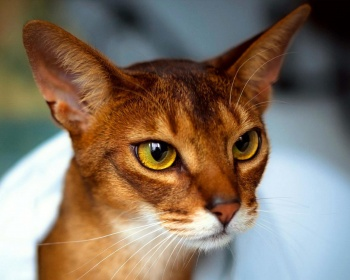

|  | Большинство абиссинских взрослых кошек имеют тело среднего размера, однако они склонны быть немного более «мускулистыми» сравнительно с другими породами кошек аналогичной формы и размера. Вес взрослых особей может достигать 3-6 кг, а рост от 28 до 32 см. Голова имеет клиновидную форму с глазами в виде миндалин зеленого или же янтарного цвета. Шея у этих кошек выгнутая и длинная. Шерсть густая, имеет тонкую структуру и при этом короткая. Абиссинская кошка может иметь окрас голубой, фавн, соррель и дикий. |